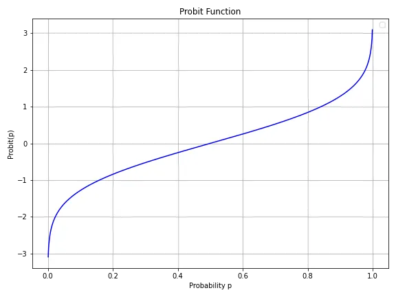
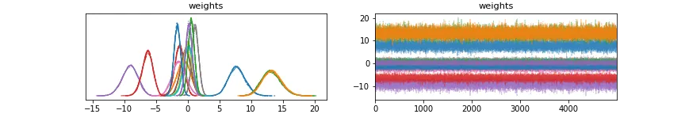
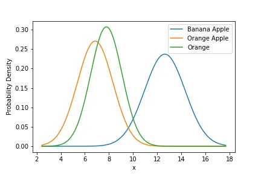

Regression and Bayesian Methods in Modern Preference Elicitation
Application to simple smoothie-making
Linear regression is often considered the workhorse of predictive modeling, yet its application extends beyond straightforward predictive tasks. This article seeks to enrich the dialogue around regression techniques by introducing Probit Linear Regression as an effective tool for modeling preferences. Furthermore, we employ a Bayesian framework to transition from classical to Bayesian Linear Regression, elucidating the intrinsic relationship between cost-based optimization — specifically Binary Cross-Entropy (BCE) loss minimization — and maximum likelihood estimation.
In doing so, we aim to demonstrate that regularization can be considered a form of Bayesian prior selection, thereby bridging cost function approaches with probabilistic reasoning.
Finally, we will discuss how Bayesian Linear Regression allows not only for point estimates but also provides a distribution over these predictions, offering a richer, uncertainty-aware perspective.
The Bayesian Framework
The Bayes Framework identifies two principal components: the data D and the model w. By specifying the likelihood P(D∣w) and a prior over the model P(w), we aim to find the model that maximizes the posterior P(w∣D), derived via Bayes’ theorem as:
In preference learning, having a distribution over w offers the advantage of capturing the uncertainty inherent in human preferences, thereby providing not just a single ‘best guess’ but a range of plausible models.
The Preference Elicitation Problem
Preference Elicitation is a key component in decision theory, aimed at identifying a decision-maker’s choices based on available data. In this study, we tackle the Preference Elicitation Problem by fitting a model to a partial set of preferences. In our case, preferences are expressed in their most straightforward form: pairwise comparisons. To illustrate this concept, consider a set of fruits, denoted by F, including apple, banana, orange, litchi, and mango.
In our context, the alternative set A consists of all possible smoothies that can be created using one or multiple ingredients from set F.
The user articulates their preferences through a set of ordered pairs (A,B), where A is strictly preferred over B.
The subsequent section of this article will introduce the family of functions specifically chosen to capture user preferences: additive functions. These mathematical constructs provide a straightforward yet robust framework for understanding how different factors contribute to an individual’s preferences, thereby enabling effective modeling of the choices expressed through pairwise comparisons.
Additive Models
The Linear Additive Model is the most straightforward model that could be used to capture the preferences of the user.
The additive linear model
An additive utility model is one that assigns a specific weight to each individual ingredient in our set. The overall utility or ‘likability’ of a smoothie is then calculated by summing up the weights of its constituent ingredients. Formally, given a vector of weights
The utility of a smoothie made from a subset A of ingredients is:
Where I is the identity function that tests whether I am in A or not.
The additive model with binary interactions
The 2-additive model builds upon the 1-additive model by introducing an additional layer of complexity. Not only does the weight vector contain a weight for each individual ingredient, but it also includes weights for every possible pair of ingredients. This allows the model to capture synergies between pairs of fruits, effectively recognizing how the combination of two ingredients can influence the overall utility. Formally, the weight vector w is extended to include weights for each pair (i,j) in addition to the singletons:
And with the 2-additive linear model, the utility of a smoothie is given by:
Where F² is the set of singletons and pairs.
The n-additive model
Extending the concept even further, the n-additive model offers a highly flexible utility framework. In this model, the weight vector not only accounts for individual ingredients and pairs but also extends to include weights for any subset of up to n ingredients. This generalization allows the model to capture intricate relationships and synergies among multiple ingredients simultaneously.
Formally, the weight vector w is expanded to include weights for all possible combinations of up to n ingredients:

This n-additive model can capture the full range of interactions among ingredients, making it an extremely powerful tool for understanding complex preference structures.
For the purposes of this analysis, we will restrict ourselves to 2-additive models, as we believe that the complexity of the preference relationships among ingredients is unlikely to exceed pairwise interactions.
Learning the preferences by solving a Probit Regression problem
While traditional regression models output real-valued predictions, our goal is to predict a binary preference relation.
To achieve this, we modify our regression model to output the probability that option A is preferred over option B. We then derive an appropriate cost function to effectively fit this probabilistic model to our data.
One classic way to squash a value between 0 and 1 is to use the Probit function. The Probit function is defined as follows

The following figure illustrates its shape

By applying this function to the difference between f(A) and f(B), our model will yield a probability approaching 1 if f(A) significantly exceeds f(B). Conversely, it will produce a probability near 0.5 if f(A) is approximately equal to f(B).
Thus, the preference elicitation problem can be rephrased as the search for an optimal weight vector w such that:
Binary Cross-Entropy (BCE) loss
The Binary Cross-Entropy (BCE) loss, also known as log loss, serves as a performance metric for classification models that output probabilities ranging from 0 to 1, typically used in binary classification tasks. Mathematically, given the true labels y (either 0 or 1) and the predicted probabilities p, the BCE is defined as:
Toy Data Generation
To validate our methods, we introduce a protocol for generating synthetic data.
The process begins by randomly sampling a weight vector w. We then set some of its parameters to zero, To introduce a layer of realism and simplicity.
Operating under the assumption that the user’s preferences align with this sampled function, we can employ it as a benchmark to assess the accuracy of our predictive model.
def singletons\_and\_pairs(lst):singletons = [(x,) for x in lst]pairs = list(combinations(lst, 2))return singletons + pairsingredients = ["o", "a", "b","l", "m"]model = singletons\_and\_pairs(ingredients)w = np.random.normal(0, 1, size = (len(model),))p = np.random.randint(0, 2, size = (len(model),))w = w \* p
Then we encode each alternative with a binary vector where the components are in the same order as in the model parameters using the following function
def vectorize\_smoothie(smoothie):arr = np.zeros(len(model))print(list(smoothie))for i in range(arr.shape[0]):if all(j in list(smoothie) for j in model[i]):arr[i] = 1return arr
Then to evaluate a particular smoothie we use a product
vectorize\_smoothie("oa") @ w# Return w\_a + w\_o + w\_oa
To construct our dataset, we begin by sampling a weight vector w. Next, we generate a set of smoothies and evaluate each based on the sampled weights. For every pair of smoothies A and B where f(A)>f(B), we add a corresponding preference to our dataset. Each preference between A and B is captured in a vector, defined as follows:
For each pair A,B where f(A) > f(B) we add two rows v(A,B) and v(B,A) the first labelled with the class 1 and the second with the class 0.
The following code gives us a dataset on n smoothies.
def sample\_dataset(n):ingredients = ["o", "a", "b","l", "m"]model = singletons\_and\_pairs(ingredients)X = []y = []w = sample\_w(model)subsets = set()while len(subsets) != n:s = random\_subset(ingredients)subsets.add(s)subsets = list(subsets)for i in range(len(subsets)-1):x\_i = vectorize\_smoothie(subsets[i])for j in range(i+1, len(subsets)):x\_j = vectorize\_smoothie(subsets[j])x1 = x\_i - x\_jx2 = x\_j - x\_iif f(subsets[i], w) == f(subsets[j], w):continueif f(subsets[i], w) > f(subsets[j], w):X.append(x1)X.append(x2)y.append(1)y.append(0)continueif f(subsets[i], w) < f(subsets[j], w):X.append(x1)X.append(x2)y.append(0)y.append(1)continueX = np.array(X)y = np.array(y)return X,y,w,model
The cost-based resolution
One way of solving the problem is by using the convexity of the BCE loss and a library such as Torch.
We start by wrapping the generated data into the proper Dataset Loaders provided by PyTorch.
X,y,w,model = sample\_dataset(30)X\_tensor = torch.FloatTensor(X)y\_tensor = torch.FloatTensor(y)dataset = TensorDataset(X\_tensor, y\_tensor)train\_size = int(0.3 \* len(dataset))test\_size = len(dataset) - train\_sizetrain\_dataset, test\_dataset = random\_split(dataset, [train\_size, test\_size])train\_loader = DataLoader(dataset=train\_dataset, batch\_size=32, shuffle=True)test\_loader = DataLoader(dataset=test\_dataset, batch\_size=1, shuffle=False)
Now, we create a simple linear model
class BinaryClassifier(nn.Module):def \_\_init\_\_(self, input\_dim):super(BinaryClassifier, self).\_\_init\_\_()self.fc1 = nn.Linear(input\_dim, 1)def forward(self, x):x = torch.sigmoid(self.fc1(x))return x
And we train it using the autograd functionalities of PyTorch.
input\_dim = X.shape[1]model = BinaryClassifier(input\_dim)# Loss and optimizercriterion = nn.BCELoss()optimizer = optim.Adam(model.parameters(), lr=0.01)losses = []# Train the modelepochs = 200for epoch in range(epochs):for batch\_idx, (data, target) in enumerate(train\_loader):optimizer.zero\_grad()output = model(data).squeeze()loss = criterion(output, target)loss.backward()optimizer.step()
Then we test the obtained model using the test dataset
model.eval()with torch.no\_grad():correct = 0total = 0for data, target in test\_loader:output = model(data).squeeze()predicted = (output > 0.5).float()total += target.size(0)correct += (predicted == target).sum().item()acc = correct / totalaccuracy.append(acc)if (epoch+1) % 50 == 0:print(f'Epoch [{epoch+1}/{epochs}], Loss: {loss.item():.4f}')print(f'Test Accuracy: {100 \* correct / total:.2f}%')
With 20% of the data used for the training, we obtained about 98.32% of accuracy which is not bad at all.
The Maximum Likelihood Estimation (MLE)
An alternative method for addressing the probit regression challenge involves explicitly formulating the likelihood of the data given a weight vector w.
We begin by assuming that the model produces a probability p indicating that A is preferred over B. The predictive distribution for this scenario is expressed as follows:
The likelihood of a pair (x,y) given a vector of weights is then expressed as:
The probability of the dataset is
Likelihood values can be extremely small, significant when multiplying many probabilities together. This can lead to numerical underflow (where very small floating-point numbers are rounded to zero). Taking the logarithm of these values turns them into more manageable numbers, which are typically negative and of a larger magnitude.
The log-likelihood is thus given by
You will probably notice that this loss is the negative of the BCE loss, and this is why maximizing the likelihood is equivalent to minimizing the BCE loss.
Regularization Techniques
Regularization is a key technique in machine learning to combat overfitting, where a model excessively adapts to training data, including its noise, impairing its performance on new data. It works by adding penalty terms to the loss to limit the complexity of model parameters. This promotes simpler models, striking a balance between fitting the training data and maintaining model simplicity.
L1 (Lasso) and L2 (Ridge) are common regularization forms, each introducing unique penalty terms to the model’s objective.
L1 adds a penalty based on the absolute value of parameters, leading to sparse models with some weights being zero.
In contrast, L2 penalizes the square magnitude of parameters, shrinking weights without making them zero.
L1 (Lasso) and L2 (Ridge) regularization techniques differentiate in how they penalize model parameters. L1 applies a penalty proportional to the absolute values, leading to some weights being entirely zero, facilitating feature selection. In contrast, L2 penalizes the squared magnitudes of the weights, ensuring they remain small but generally non-zero, preserving all features with reduced impact.
Maximum a Posteriori
As previously mentioned, Bayes’ Theorem allows us to estimate the posterior distribution of model parameters, denoted as P(w∣X,y), by leveraging the likelihood function and a chosen prior distribution P(w) for the parameters.
In essence, the prior encapsulates our initial beliefs or assumptions about the parameters before observing any data, while the likelihood quantifies how well the parameters explain the observed data. Bayes’ Theorem combines these elements to produce a posterior distribution that represents our updated belief about the parameters, given both the prior and the data.
Two very known priors are the Laplace and the Gaussian priors.
The Laplace prior operates under the assumption that the weights w are drawn from a Laplace distribution with location parameter μ=0 and scale parameter b.
In other words, it presumes that the distribution of the weights centres around zero and decays exponentially as values deviate from this central point, reflecting a preference for sparser models in which many weights may be set to zero.
The Gaussian prior operates under the assumption that the weights w are drawn from a Gaussian (or Normal) distribution with mean μ=0 and variance σ.
In essence, it supposes that the distribution of the weights is symmetrically centred around zero, with a bell-shaped profile indicating that weights are most likely to be close to the mean, tapering off less likely values as you move further away. This leads to a preference for models where weights are smoothly regularized, ensuring they remain small in magnitude without necessarily driving any to be exactly zero.
The log-posterior is given by
By optimizing our model, we find that maximizing the log posterior is fundamentally equivalent to minimizing a specific regularized loss.
Notably, the distinction between L1 and L2 regularization rests upon the chosen form of prior distribution considered.
Using the posterior in an MCMC method
In a Bayesian framework, everything is treated probabilistically. So, instead of estimating fixed values for regression coefficients as in classical linear regression, Bayesian Linear Regression estimates a distribution over possible coefficient values.
One way of using the posterior distribution is by sampling a set of weights from the distribution P(w|X,y).
A simple way to do so is by using an MCMC method, the starting point to understand an MCMC method is the Metropolis-Hasting Approach.
Metropolis Hasting Approach
The Metropolis-Hastings (M-H) algorithm is a method in Bayesian statistics to sample from complex probability distributions.
It uses a simpler “proposal distribution” to explore a target distribution, accepting or rejecting samples based on a calculated probability. Notably, the M-H algorithm doesn’t require knowledge of the exact target distribution; having a distribution proportional to it is sufficient.
We will not use it because other approaches are more reliable and efficient but we will still briefly explain how it works because M-H algorithm is a foundational MCMC method.
- Choose an initial guess
- Set a proposal distribution, typically a Gaussian centred at the current value w.
Then for each iteration, we proceed as follows:
- Sample a new w’ from the proposal distribution P(w’|w).
- Compute the acceptance probability

- Draw a random number u from a uniform distribution over [0,1]. If u ≤ α, accept w’ as the new sample; otherwise, retain w.
NUTS Sampler and pyMC3
The Metropolis-Hastings approach involves proposing a new point in the parameter space, and then deciding whether to accept this new point based on a comparison of its likelihood to the current point’s likelihood. Its efficiency depends heavily on the choice of proposal distribution, and it can suffer from random-walk behaviour in high-dimensional spaces, leading to slow convergence.
NUTS (No-U-Turn Sampler) is an extension of the Hamiltonian Monte Carlo (HMC) method. Instead of a random walk, NUTS utilizes gradient information from the target distribution to propose leapfrog steps, allowing it to traverse the distribution more efficiently. One of its main advantages is that it automatically determines the optimal number of leapfrog steps, thus avoiding the random walk problem and the tedious task of tuning this manually.
PyMC3 is a popular probabilistic programming framework that seamlessly integrates both these methods (and others), enabling users to fit complex Bayesian models with ease, without getting bogged down in the intricacies of the underlying algorithms.
In our case, this code will sample a sequence of weights from the posterior distribution P(w|X,y).
import pymc3 as pmwith pm.Model() as probit\_model:# Priors for weights and biasweights = pm.Normal('weights', mu=0, sd=4, shape=X.shape[1])bias = pm.Normal('bias', mu=0, sd=4)# Probit link functionmu = pm.math.dot(X, weights) + biasphi = pm.math.invprobit(mu) # Inverse probit link function# Likelihoody\_obs = pm.Bernoulli('y\_obs', p=phi, observed=y)# Sample from the posteriortrace = pm.sample(5000, tune=1000, chains=5, target\_accept = 0.90)
We can plot the different distributions of each weight.

We see that each weight converges to a Gaussian distribution. And so now each prediction could be made probabilistically and the distribution of the predictions will also be a Gaussian.
For instance, the preferences of our fictive decider for an Orange smoothie, for an Orange-Apple smoothie, and for a Banana-Apple smoothie are given by the following Gaussians.

Using the model that generated the data we can see that the ground truth utility of the three smoothies are respectively -0.66, -0.24 and 0.79 so the Gaussian actually reflects the preferences and the gap between them pretty well.
Conclusion
In this blog post, we have journeyed from the intricacies of preference elicitation to the complexities of Bayesian linear regression models. Our discussion began with an exploration of 2-additive models, which serve as a realistic yet computationally tractable means of capturing user preferences. By transitioning from basic linear regression to more advanced probit models, we offered a new lens through which to understand preference data.
We also dove into the equivalence between a cost-based perspective and a probabilistic one, shedding light on how minimizing Binary Cross-Entropy loss is analogous to maximizing likelihood, and how regularization serves as the implicit selection of a prior.
Lastly, we discussed the utility of a Bayesian framework in generating not just point estimates but entire predictive distributions. This approach lends a higher level of confidence and interpretability to our models, particularly useful in the nuanced task of preference learning.
With this groundwork laid, future research can delve deeper into the application of these sophisticated models to increasingly complex and large-scale preference data.
Acknowledgments
Special thank to
my coworker/friend for her contribution in this work and to the TDS team for their prompt review and insightful remarks.